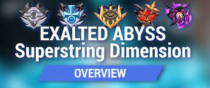

Guía para Exalted PRI.

superstring
En honkai el apartado más famoso es el del abyss. aquñi una pequeña explicacion de lo que es este modo en exalted
Video de referencia:
Regresar a la guá de exalted